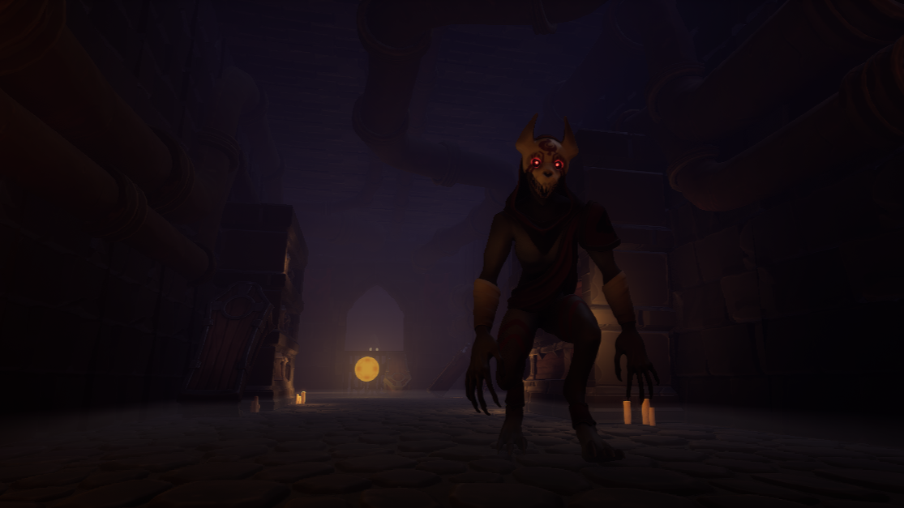

Path of Light (WIP)
Producer
Engine: Unreal
Platform: PC
Team Size: 15
Project Length: 7 months
Path of Light is an in-development single player steath adventure game. The above image depicts the main character, Lumi, standing in the crypt level. I am currently working as the Producer on this project. The bulk of my work is largely behind the scenes, organizing and delegating work amongst my teammates. ClickUp, Excel, and Discord are the tools I use on a daily basis to check in with my teammates and ensure the project is moving forward smoothly.
Above is an image of one of the enemies present in the crypt level, guarding the light key that unlocks the exit out of the level. When creating the initial design for this level, I collaborated with our Creative Director to ensure its design both fulfilled her vision and would be feasible to complete within our existing budget. As development progresses, my main priority is ensuring the design does not grow beyond our means. I aim to continue to design with a limited scope in mind to minimize waste and cuts.
Into the Maelstrom
Producer
Engine: Unreal
Platform: PC
Team Size: 9
Project Length: 4 months

Into the Maelstrom is a single player puzzle adventure game. It combined an ambitious variety of systems including puzzle solving, dialogue (depicted above), a day/night cycle, and a monstrous enemy (depicted below). As a first-time Producer, this project taught me many hard lessons in scope. The project was initally budgeted with a limited timeframe in mind, but ran into bugs late in development due to the number of overlapping systems. This put an excessive burden on the programmer of the team. I have since learned to budget time more frugally, and plan for the high possibility of technical issues and bugs during later stages of development.

This project was managed over Discord in tandem with weekly in-person meetings. These meetings were highly productive as it allowed all members to collaborate on the broad strokes of the design and efficiently assess the status of the project. I focused on fostering a strong sense of collaboration within the team, emphasising the value of learning new skills over creating a perfect product.
Above is the recorded final presentation of the gameplay and features of Into the Maelstrom.